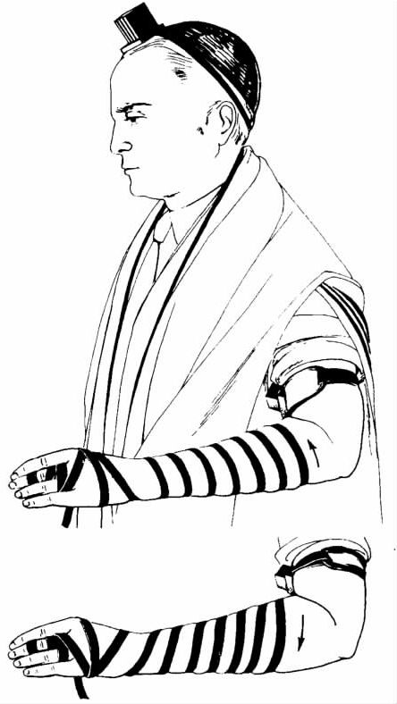
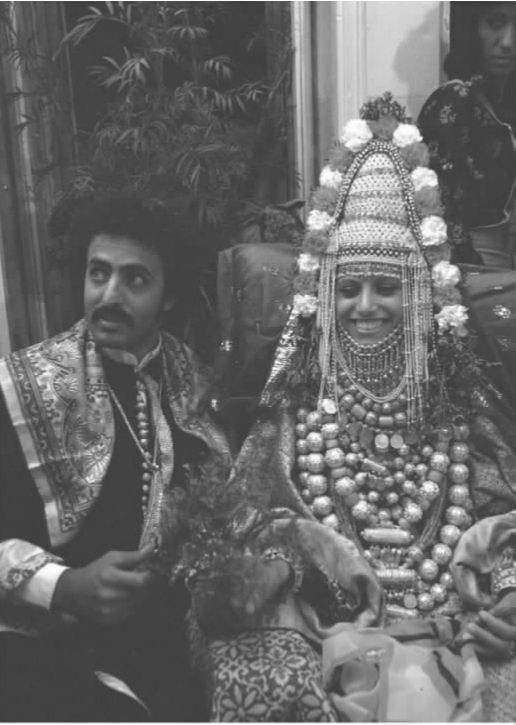

你是一个犹太教徒。刚结婚，要建立一个新家庭。下面要怎么做？
稍等片刻，想一想。你已经抵押贷款，买了一处房子或公寓自住。你真走运！你可是为数不多的幸运者之一啊，看看世界范围内的犹太人，别只盯着住得起纽约、伦敦或约翰内斯堡环境优雅的郊区的少数犹太人。许许多多犹太人上无片瓦遮身，至多只能挤在父母家里，房间狭小，根本没有私人空间。
也许你不在乎。这样的话，你就是那么一个普通人，一个淡漠的犹太人。但为说明问题的所在，我们假设你虽不是圣人，却是一个准备而且愿意把一生献给《托拉》理想的人。这样，你就不是一个普通人，但也不是一个特立独行的人。
你是一个理想主义者。那么，你关注的第一件事就是如何帮助那些不太走运的人。很可能在婚礼上，你或者你的父母就给生活困难者一些救济；在你祖父母的时代，尤其是如果他们生活在东欧的某个小村子里，他们会请一些当地穷人参加庆典和节庆宴会，但在“文明的”城市社会，这就不太实际了。
你有家，也有固定收入。那么，你必须拿出适当的零用钱行义举（捐献）。收入的十分之一应该留出来做慈善。这种缴什一税的观点来自于经书；《圣经》中规定，以色列的农户留出十分之一的牛羊和农产品，献给祭司、靠救济生活的利未人和穷人。德国人亚设·本·约希勒在公元13世纪成为西班牙巴塞罗纳的大拉比，他认为，如果我们因为犯罪被从祖国放逐，即使富裕起来，也没有任何意义；今天我们已不用向祭司和利未人缴纳什一税，我们至少应该拿出十分之一（有人说是五分之一）的收入支持有价值的事业和生活困苦的人。
“捐出十分之一”是要凭良心来决定的问题，而不是社团征缴的税款。捐献的数量也并不固定。有时候社会需要多，你拿出来的要多过十分之一；反之，有些情况下，你直系亲属的需求必须被优先考虑。不管怎么说，现代的经济活动使人难以确定“收入的十分之一”是指什么；是税前还是税后？在多大程度上，由税收征缴来的款项被用于本身即是义举的公益事业，比如教育、住房和卫生？
建立新家的时候，你不会担心细枝末节的问题。你的目的将是保证你家要以行义举为基本的生活方式。这不仅仅意味着捐赠钱财，还包括最广义上的慈善；要热情款待有学问的人、陌生人、贫困者，看望病人，经常关注其他人的福利。
现在，你的良心已安顿下来，我们可以看看住房本身了。《施玛篇》（见第71页）中有这么一句话：“你要把它们［即上帝的话］写到门柱上，写到大门上。”按照拉比的解释，这句话是说，包含这一节内容的《申命记》的两个部分，即《施玛篇》的前两段应该用墨水写到羊皮纸上，放进匣子里，固定到门框上，在进门右首自下向上至少三分之二处。装羊皮纸的匣子叫“麦祖札”，意思是“门柱”。在很多犹太人家的门首，除了恪守教规的正统派犹太教徒家的浴室门之外，都能见到这种匣子。
不问不找就看不到的东西是正统派犹太教徒在特定的宗教仪式上佩戴的“塔利特”和“泰斐林”，因为这些东西不大可能放在明处。塔利特，有时是指“晨祷披巾”，一块方形的料子，多为羊毛织物，四角有条纹（参见《民数记》，15：37—41）；晨祷时披在肩头。泰斐林，或称“祷告文匣”，是两个捆扎在一起的皮匣子；里面装着四段圣经文字，包括“系在手上为记号，戴在额上为经文” [1] 这样的说明；工作日的晨祷中，奉神的男子（保守派与改革派集会中偶有女人）将一匣系于左臂对准心脏处，另一匣系于前额。
在犹太人家里，你还有可能看到的其他宗教物品包括安息日用的烛台，光明节用的八连灯大烛台或者枝形大烛台，还有安息日和其他节庆结束时，结束仪式上要用的香料匣和烛座。另外还会有未必放在明处的各种高脚杯和逾越节家宴上专用的碟子（见第55页）。很多物品都是工艺精湛的艺术品，可能是当做传家宝传下来的。
“书中提到的人”这个说法来自《古兰经》，既指犹太教徒也指基督教徒，即“经中提到的人”。它并不指“读过很多书的人”，但即使是这个意思，也是对犹太人的恰当描述。新家的书房里，你一定要藏有祈祷书、节庆书、逾越节家宴书，以及《摩西五经》的摹本（往往是评注本，比如赖施的评注本），这些是你从学校得到的，或在成年礼或婚礼上别人送的。

图10 塔利特与泰斐林，工作日晨祷时佩戴。安息日和节庆日时，只戴塔利特。
如果读的书更多一些，那你就会有一套二十卷左右、装帧精美的希伯来文《巴比伦塔木德》，也会有其他犹太经典的选本。在以色列，多家日报为了竞争读者，会免费赠阅或打折出售《巴比伦塔木德》，或许以色列是唯一允许这样做的国家；如果你生活在这个国家，也有可能在智力测验或抽奖中赢得一套。
《塔木德》还真是“贵重的”物品，为了它，你还会读一些普通的犹太书籍，历史的、文学的或幽默的，收藏唱片、磁带、CD以及你所喜爱的犹太娱乐节目录像；此外，你还可以登录犹太教和以色列网站，经常阅读犹太教地方报纸——如果是在英国，很可能要读《犹太纪事》，它自称是“全世界最重要的犹太报纸，1841年创刊”。
这些书不会只是用来装点书架。你会邀请拉比或者朋友经常来到家中，研习《塔木德》、《圣经》，或者其他传统经文。如果能安排一个日常研习班，这就是你一周或者一天最有意义的时刻了。
我们在上一章提到过，研读《托拉》是犹太教中最具精神价值的活动之一。这也是家中最快乐的事。研读经书，不仅仅是孩子或社会精英的事，也是全体以色列人 的事。最近几年，在其他方面极为保守的正统派犹太教所实现的最鼓舞人心的进步，是扩展了《托拉》研读活动的范围，让女性也加入。女性教育在过去被忽视了，甚至遭到反对。
越来越多的犹太年轻人成了素食主义者，不管是出于健康目的或经济原因，还是出于保护动物权益的考虑。有些人从经文或传统寻求依据——亚当和夏娃就是素食主义者；按照15世纪的拉比、政治家和圣经评注家伊萨克·阿布拉瓦内尔的说法，弥赛亚来临时，我们都应该是素食主义者（伊萨克的信徒忽略了他还有其他预言，即我们都应该是无政府主义者和自然主义者，不再住在房屋里）。
但是，我们现在假设你家厨房各种食物无所不备，至少“犹太饮食教规”所许可的食物，也即符合律法书规定的合乎教规的（kosher）食物无所不备。（“kosher”一词的意思仅指“可食”。多数犹太人把“不洁净”当成它的反义词。）
首先，要注意哪些走兽、鸟类和鱼类是教规许可的。《圣经·利未记》第11章有几个清单，有的清单《申命记》第14章再次进行了强调。只有那些分蹄成趾而且反刍的走兽可以食用——实际上，牛、绵羊、山羊和鹿可以食用，但猪、骆驼、马和兔子不可以食用。禁吃的鸟类清单也有，这表明清单之外的所有鸟类都可以食用；由于不可能有把握地确定清单列举的所有鸟类，拉比便只许可我们食用那些由传统可知符合教规的鸟类，比如鸭、鹅、鸽子、孔雀和家禽等。所有有鳞有鳍的鱼都可以食用；不包括贝类和甲壳类（章鱼、虾类、蟹类等），也不包括鳗鱼、鲨鱼和其他一些被认为未生有“恰当”鳞片的鱼类。对于那些能够依照传统识别蝗虫的人，某些种类的蝗虫是可以食用的。
走兽和鸟类，即便是可以食用的种类，如果不按礼定屠宰的特定方式宰杀，也不合乎教规，不可食用。礼定屠师必须经拉比特许才能进行屠宰。他用快刀切入动物的气管和食管，同时割断大动脉，使之立即丧失意识；如果屠宰得当，这种方式就很“人道”。肉中的血要流净，要清洗、抹盐，再漂洗干净；数世纪以来，这一直是家庭妇女独有的工作，现在则主要由合乎教规的屠宰师或供货商来做了。
一个恪守教规的家庭有两套备餐与用餐的器具，一套“肉类”餐具专用于肉类和肉制品类；另一套“奶类”餐具专用于奶制品以及非动物类食品。之所以这样，原因在于肉和奶是不可以混在一起的。
并非所有犹太人都同样严格地遵守饮食教规（什么东西可以食用，什么东西不可食用）。有些改革派教徒根本不理会这一套，他们强调，犹太教的本质在于伦理道德观念，不在于食谱（原则上，正统派教徒同意这一点，但不认为这是放弃饮食教规的理由）。于是，有些人不吃猪肉，其他什么都吃；有些人不吃任何不合教规的肉类食品，却忽视其他的教规约束；有些人在家吃合乎教规的食物，在外则不然；有些人从来不吃不合教规的肉类，但似乎并不在意面包和糖果里是不是含有不合教规的油脂或食品添加剂。少数人遵守酒与乳酪方面的禁约，即便酒和乳酪里并不含不合教规的成分。还有些人极端保守，他们遵从许许多多附加的“预防性”措施，除拉比严格监督下准备的食品之外，不可能接受任何食物。
风俗习惯、家庭与社会关系、个人性情，这些决定了个人如何确定自己可以食用什么。如果邀请他人或者受邀参加宴会，最好公开明确地表明你、主人或者客人遵循何种饮食教规；如果不清楚，最好问问。
《圣经》和《塔木德》都允许一夫多妻制，不过，到了《塔木德》时期，一夫多妻已不多见。公元1000年左右的西欧，美因茨的格肖姆拉比颁布禁令规定，除非有特殊的情况，任何多妻的男子都要被逐出教会。这个禁令很快被大多数基督教国家的犹太人接受，伊斯兰教国家的犹太人则不然，因为在这些国家，《塔木德》和《古兰经》给出的忠告是，每个男人限娶四个妻子，只要他能满足妻子的性需求和经济需要。
婚外性关系是禁止的；纳妾制度废止以后，这个禁令才算明确下来。事实上，有些东西禁止了，不等于就不会发生。“共同生活”现象在西方国家的犹太世界里很常见，犹太人中当然也有通奸者。在性取向和生活方式方面，传统教规和当代的实际情况也存在同样的不一致。《圣经》和拉比律法一致反对同性恋，然而，这并没有阻挡犹太人成立“同性恋”俱乐部，甚至同性恋犹太会堂。
然而，对于守法的人来说，甚至婚内性行为也有严格限定。有些限定意在确保性行为得体，或者保护性伙伴不遭强迫。主要的限制是，禁止与经期妇女发生性关系（分居）；月经结束后继续分居七天，直到妇女遵仪式彻底沐浴之后，才可同房。经后沐浴是一种洁净礼，这种洁净礼也适用于祭司进圣殿礼拜之前（以及其他场合），或者是改宗皈依犹太教的人。“浸礼”（baptism）只是对希伯来文“浸洗”（tevila）的希腊语译文。
婚姻关系是一种彼此爱慕、相互尊重与支持的关系。要以关系持久为基础，才可以确定婚姻。拉比犹太教遵循希伯来圣经，一直许可离婚，尽管对离婚在哪些情形下合适有过许多争议。婚姻关系，一旦依照犹太律法确立，就只能由该律法予以解除；律法对离婚的要求是，由丈夫向妻子提交离婚书，必须有见证人在场。正统派犹太教的女性常常因为这一要求承受很大的痛苦，因为如果丈夫不愿意，就没有多少办法强迫他认可离婚书，而拉比法庭又不会直接“解除”婚姻关系。最近，也采取了一些措施来改善这种状况，充分利用了不同国家的各种法律程序。
大多数传统社会都强调家庭的重要性；毕竟，传统的价值观念都是在家庭范围内获得了最有力的表达和最有效的传播。犹太教也不例外，不过，西方民主体制下的犹太家庭与其他社会的家庭一样承受着破裂压力，家庭不再像以前那么稳固了。
强调家庭观念也有负面影响，即存在着将外族人、单身和未婚人士边缘化的危险。《第二以赛亚书》似乎在二千五百年前就非常关注这一点：
（《以赛亚书》，56：2—5，《新英文〈圣经〉》）

图11 婚庆习俗差别很大，每个犹太社区都热衷于保存自己的传统。图为以色列灵步舞剧团的演员扮作也门犹太新娘的样子。
外族人、单身和未婚人士要想在社会中获得舒适的生活，像以赛亚所期望的那样，对许多犹太社区来说，还有很长的路要走。
莎士比亚提到过人生的七个时期：“在保姆的怀中啼哭、呕吐”的婴儿期；发牢骚的学童期；谈情说爱期；军人期；法官期；第六个时期，变成“羸弱的邋遢老头儿”；最后“又成了孩子样，什么都会忘。”（《皆大欢喜》第2幕第7场，第139—166行）
现在，犹太社会学家以各阶段的仪式为标志，划分人生的七个时期。这七个时期不同于莎士比亚的，也不与犹太传统严格对应，但是，这种划分合乎我们的要求。
一、出生
男婴——出生后第八天行割礼——举行家宴——这是可追溯到亚伯拉罕时代的古老传统。
长子——出生后第三十天举行“赎罪”礼，这是附加的仪式。
女婴——没有任何传统的仪式，但是（1）妈妈要参加犹太会堂里的感恩祷告，并且/或者（2）特别是改革派犹太教，要把婴儿带到会堂祈福。
二、成长
孩子自记忆希伯来文字母表——吃蜂蜜蛋糕等做成的字母始，就要有选择地参加各种典礼。
男孩十三岁参加成人礼。成人礼属个人性质的典礼，男孩要在犹太教会堂诵读《托拉》，举行一个大型的聚会，别人要送礼物。
女孩可以在十二岁举行成人礼——这是改革派犹太教仿照男子成人礼设定的。正统派犹太教只是在近年才开始公开举行成人礼，通常是为适龄女子举行集体典礼，外加一些个人聚会。相对于女子成人礼，不少正统派教徒更倾向于举行坚振礼；像基督教坚振礼一样，犹太教的坚振礼通常也在年龄大一点时举行，并且要先圆满完成一项规定的课程。
不过，自由派和改革派犹太教会堂已经不再像以前那样，偏好坚振礼甚于成人礼。
三、婚事
按照犹太律法的观点，婚礼有两个性质不同的程序。第一步是订婚礼。在证婚人面前，新郎送给新娘一个信物（现在是结婚戒指），还要说“按照摩西和以色列的律法，以这枚戒指为凭，你和我订婚”；新娘不需开口，因为沉默表示应许。接着背诵两段祈福词，共饮一杯红酒。
下一步是结婚仪式。新郎新娘站在象征新家的“胡帕”（婚篷）之下，背诵七段祈福词，再次共饮一杯红酒。这对夫妻得到祝福，新郎摔碎一只杯子，表示即便在最快乐的日子里也不忘耶路撒冷被毁的苦难。接下来，在证婚人的面前，新人暂时分开。
婚礼可以简单而朴素，也可以花团锦簇、歌声四起，新娘穿婚纱，新郎穿早礼服，家长领着新婚夫妇走进彩棚，众人有说有笑，相互祝福，载歌载舞，大摆宴席——实际上，宴席要持续七天七夜。而哈西德教派和偏保守的正统派犹太教徒，会将新婚夫妇从头到尾一直分开。
改革派犹太教徒平等对待新郎新娘，双方相互交换戒指，也许还互立婚誓，两个人不用分开，宴会只在婚礼上举行，不会持续七个晚上。
正统派和改革派教徒、欧美犹太人和东方犹太人之间婚庆习俗差异很大，类型繁多。婚庆音乐从舞厅音乐到犹太传统音乐，从通俗音乐到经典音乐，应有尽有；尽管知道有人甚至喜欢中世纪的弦乐，但这对大多数人的品位而言，太过婉约了。
四、为人父母
抚养子女的技巧不独为摩西、大卫王或哲学家柏拉图掌握。犹太会堂的社团中心专为培养合格的父母开设了培训课。然而，孩子们适应性强，不用训练一样能长大。
五、中年生活
近年来，人类平均寿命不断增长，社会学家开始将中年生活及其危机确定为人的成长——或者说瓦解的独特阶段。此阶段尚待设计出恰当的仪式。
六、晚年
本阶段的理想状态就是通过人生阅历而达到不惑的境界，成为一些人钦佩和尊崇的焦点，因为那些人尚未成熟，还奋斗在人生的前几个阶段。这个理想适用于男性，同样适用于女性。有时会如愿以偿。然而，现实常常不尽如人所愿，反而更像莎士比亚所说的那样，“又成了孩子样，什么都会忘／没了牙齿，没了味觉，没了一切”。
七、死亡
正统派犹太教徒只有土葬；改革派犹太教徒可以火化，也可以土葬。
死者亲近的人（配偶、父母、兄弟姐妹、儿女）撕裂外袍，脱掉鞋子，要“守七日服丧期”，也就是说坐到地上，或坐在家里的矮凳上，朋友来家里探访，安慰他们，家里天天都要祷告。“七日服丧期”的本义就是“七”，表示七天的哀悼时间。但是，不严守教规的人只勉强对付一晚。有人会照料哀悼者的生活需要，比如准备他们的饮食。
服丧期结束后，不甚集中的纪念活动还要持续三十天，子女要为父母哀悼十二个月。此后，每年有祭日。死者去世后的前十一个月以及此后每年的祭日，最亲近的人要到犹太会堂诵读祈祷文（不是悼念性质的祷告，而是赞美上帝的荣光）。
改革派与正统派犹太神学家都公开承认有关来生的信仰。来生是否涉及某种形式的肉体复活，或者只是“灵魂”永存，过去对此颇有争议，现在，争论的范围扩大了，有些人把来生当成一种比喻说法，代表声名与影响在死后永存。